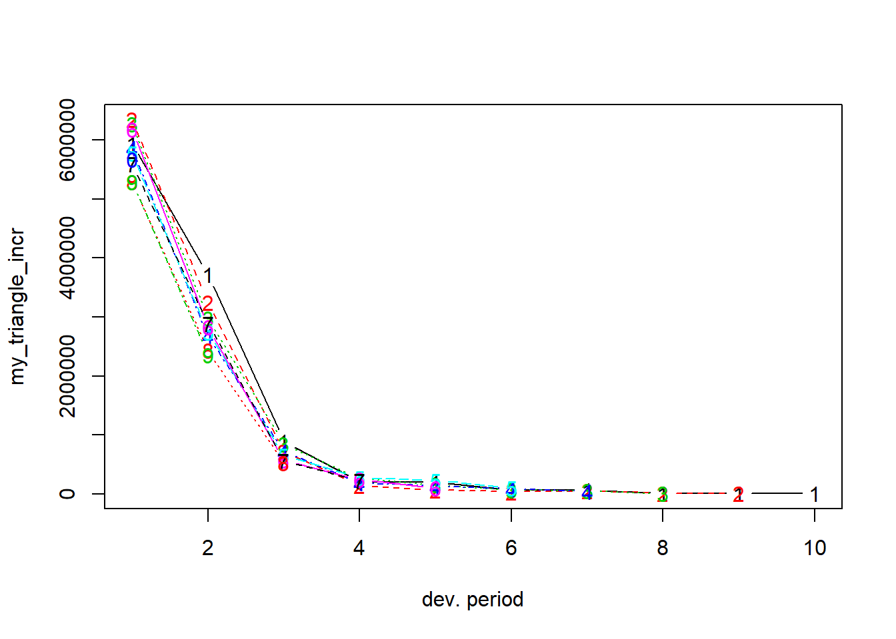
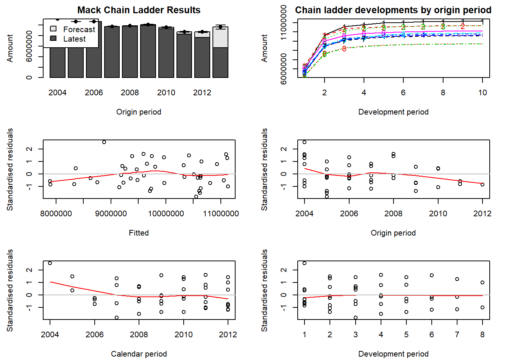

Chapter 11 Loss Reserving
Chapter Preview. This chapter introduces loss reserving (also known as claims reserving) for property and casualty (P&C, or general, non-life) insurance products. In particular, the chapter sketches some basic, though essential, analytic tools to assess the reserves on a portfolio of P&C insurance products. First, Section 11.1 motivates the need for loss reserving, then Section 11.2 studies the available data sources and introduces some formal notation to tackle loss reserving as a prediction challenge. Next, Section 11.3 covers the chain-ladder method and Macks distribution-free chain-ladder model. Section 11.4 then develops a fully stochastic approach to determine the outstanding reserve with generalized linear models (GLMs), including the technique of bootstrapping to obtain a predictive distribution of the outstanding reserve via simulation.
11.1 Motivation
Our starting point is the lifetime of a P&C insurance claim. Figure 11.1 pictures the development of such a claim over time and identifies the events of interest:
Figure 11.1: Lifetime or Run-off of a Claim
The insured event or accident occurs at time \(t_{occ}\). This incident is reported to the insurance company at time \(t_{rep}\), after some delay. If the filed claim is accepted by the insurance company, payments will follow to reimburse the financial loss of the policyholder. In this example the insurance company compensates the incurred loss with loss payments at times \(t_1\), \(t_2\) and \(t_3\). Eventually, the claim settles or closes at time \(t_{set}\).
Often claims will not settle immediately due to the presence of delay in the reporting of a claim, delay in the settlement process or both. The reporting delayThe time that elapses between the occurrence of the insured event and the reporting of this event to the insurance company. is the time that elapses between the occurrence of the insured event and the reporting of this event to the insurance company. The time between reporting and settlement of a claim is known as the settlement delayThe time between reporting and settlement of a claim.. For example, it is very intuitive that a material or property damage claim settles quicker than a bodily injury claim involving a complex type of injury. Closed claims may also reopen due to new developments, e.g.an injury that requires extra treatment. Put together, the development of a claim typically takes some time. The presence of this delay in the run-off of a claim requires the insurer to hold capital in order to settle these claims in the future.
11.1.1 Closed, IBNR, and RBNS Claims
Based on the status of the claims run-off we distinguish three types of claims in the books of an insurance company. A first type of claim is a closed claim. For these claims the complete development has been observed. With the red line in Figure 11.2 indicating the present moment, all events from the claims development take place before the present moment. Hence, these events are observed at the present moment. For convenience, we will assume that a closed claim can not reopen.
Figure 11.2: Lifetime of a Closed Claim
An RBNSReported, But is Not fully Settled claim is one that has been Reported, But is Not fully Settled at the present moment or the moment of evaluation (the valuation date), that is, the moment when the reserves should be calculated and booked by the insurer. Occurrence, reporting and possibly some loss payments take place before the present moment, but the closing of the claim happens in the future, beyond the present moment.
Figure 11.3: Lifetime of an RBNS Claim
An IBNR Incurred in the past But is Not yet Reported. For such a claim the insured event took place, but the insurance company is not yet aware of the associated claim. claim is one that has Incurred in the past But is Not yet Reported. For such a claim the insured event took place, but the insurance company is not yet aware of the associated claim. This claim will be reported in the future and its complete development (from reporting to settlement) takes place in the future.
Figure 11.4: Lifetime of an IBNR Claim
Insurance companies will reserve capital to fulfill their future liabilities with respect to both RBNS as well as IBNR claims. The future development of such claims is uncertain and predictive modeling techniques will be used to calculate appropriate reserves, from the historical development data observed on similar claims.
11.1.2 Why Reserving?
The inverted production cycle of the insurance market and the claim dynamics pictured in Section 11.1.1 motivate the need for reserving and the design of predictive modeling tools to estimate reserves. In insurance, the premium income precedes the costs. An insurer will charge a client a premium, before actually knowing how costly the insurance policy or contract will become. In typical manufacturing industry this is not the case and the manufacturer knows - before selling a product - what the cost of producing this product was. At a specified evaluation moment \(\tau\) the insurer will predict outstanding liabilities with respect to contracts sold in the past. This is the claims reserve or loss reserve; it is the capital necessary to settle open claims from past exposures. It is a very important element on the balance sheet of the insurer, more specifically on the liabilities side of the balance sheet.
11.2 Loss Reserve Data
11.2.1 From Micro to Macro
We now shed light on the data available to estimate the outstanding reserve for a portfolio of P&C contracts. Insurance companies typically register data on the development of an individual claim as sketched in the timeline on the left hand side of Figure 11.5. We refer to data registered at this level as granular or micro-level data. Typically, an actuary aggregates the information registered on the individual development of claims across all claims in a portfolio. This aggregation leads to data structured in a triangular format as shown on the right hand side of Figure 11.5. Such data are called aggregate or macro-level data because each cell in the triangle displays information obtained by aggregating the development of multiple claims.
Figure 11.5: From Granular Data to Run-off Triangle
The triangular display used in loss reserving is called a run-off or development triangle. On the vertical axis the triangle lists the accident or occurrence years during which a portfolio is followed. The loss payments booked for a specific claim are connected to the year during the which the insured event occurred. The horizontal axis indicates the payment delay since occurrence of the insured event.
11.2.2 Run-off Triangles
A first example of a run-off triangleTriangular display of loss reserve data. Accident or occurrence periods on one axis (often vertical) with development periods on the other (often horizontal). Also known as a development triangle. with incremental payments is displayed in Figure 11.6 (taken from Wthrich and Merz (2008), Table 2.2, also used in Wthrich and Merz (2015), Table 1.4). Accident years (or years of occurrence) are shown on the vertical axis and run from 2004 up to 2013. These refer to the year during which the insured event occurred. The horizontal axis indicates the payment delay in years since occurrence of the insured event. 0 delay is used for payments made in the year of occurrence of the accident or insured event. One year of delay is used for payments made in the year after occurrence of the accident.
Figure 11.6: A Run-off Triangle with Incremental Payment Data. Source: Wthrich and Merz (2008), Table 2.2.
For example, cell \((2004, 0)\) in the above triangle displays the number \(5,947\), the total amount paid in the year 2004 for all claims occurring in year 2004. Thus, it is the total amount paid with 0 years of delay on all claims that occurred in the year 2004. Similarly, the number in cell \((2012,1)\) displays the total \(2,357.9\) paid in the year 2013 for all claims that occurred in year 2012.
Figure 11.7: A Run-off Triangle with Cumulative Payment Data. Source: Wthrich and Merz (2008), Table 2.2.
Whereas the triangle in Figure 11.6 displays incremental payment data, the Figure 11.7 shows the same information in cumulative format. Now, cell \((2004,1)\) displays the total claim amount paid up to payment delay 1 for all claims that occurred in year 2004. Therefore, it is the sum of the amount paid in 2004 and the amount paid in 2005 on accidents that occurred in 2004.
Different pieces of information can be stored in run-off triangles as those shown in Figure 11.6 and Figure 11.7. Depending on the kind of data stored, the triangle will be used to estimate different quantities.
For example, in incremental format a cell may display:
- the claim payments, as motivated before
- the number of claims that occurred in a specific year and were reported with a certain delay, when the goal is to estimate the number of IBNR claims
- the change in incurred amounts, where incurred claim amounts are the sum of cumulative paid claims and the case estimatesThe claims handlers expert estimate of the outstanding amount on a claim.. The case estimate is the claims handlers expert estimate of the outstanding amount on a claim.
In cumulative format a cell may display:
- the cumulative paid amount, as motivated before
- the total number of claims from an occurrence year, reported up to a certain delay
- the incurred claim amounts.
Other sources of information are potentially available, e.g.covariates (like the type of claim), external information (like inflation, change in regulation). Most claims reserving methods designed for run-off triangles are rather based on a single source of information, although recent contributions focus on the use of more detailed data for loss reserving.
11.2.3 Loss Reserve Notation
Run-off Triangles
To formalize the displays shown in Figures 11.6 and 11.7, we let \(i\) refer to the occurrence or accident year, the year in which the insured event happened. In our notation the first accident year considered in the portfolio is denoted with 1 and the latest, most recent accident year is denoted with \(I\). Then, \(j\) refers to the payment delay or development year, where a delay equal to 0 corresponds to the accident year itself. Figure 11.8 shows a triangle where the same number of years is considered in both the vertical as well as the horizontal direction, hence \(j\) runs from 0 up to \(J = I-1\).
Figure 11.8: Mathematical notation for a run-off triangle. Source: Wthrich and Merz (2008)
The random variable \(X_{ij}\) denotes the incremental claims paid in development period \(j\) on claims from accident year \(i\). Thus, \(X_{ij}\) is the total amount paid in development year \(j\) for all claims that happened in occurrence year \(i\). These payments are actually paid out in accounting or calendar year \(i+j\). Taking a cumulative point of view, \(C_{ij}\) is the cumulative amount paid up until (and including) development year \(j\) for accidents that occurred in year \(i\). Ultimately, a total amount \(C_{iJ}\) is paid in the final development year \(J\) for claims that occurred in accident year \(i\). In this chapter time is expressed in years, though other time units can be used as well, e.g.six-month periods or quarters.
The Loss Reserve
At the evaluation moment \(\tau\), the data in the upper triangle have been observed, whereas the lower triangle has to be predicted. Here, the evaluation moment is the end of accident year \(I\) which implies that a cell \((i,j)\) with \(i+j \leq I\) is observed, and a cell \((i,j)\) with \(i+j > I\) belongs to the future and has to be predicted. Thus, for a cumulative run-off triangle, the goal of a loss reserving method is to predict \(C_{i,I-1}\), the ultimate claim amount for occurrence year \(i\), corresponding to the final development period \(I-1\) in Figure 11.7. We assume that - beyond this period - no further payments will follow, although this assumption can be relaxed.
Since \(C_{i,I-1}\) is cumulative, it includes both an observed part as well as a part that has to be predicted. Therefore, the outstanding liability or loss reserve for accident year \(i\) is
\[\begin{eqnarray*} \mathcal{R}^{(0)}_{i} = \sum_{\ell=I-i+1}^{I-1} X_{i\ell} = C_{i,I}-C_{i,I-i}. \end{eqnarray*}\]
We express the reserve either as a sum of incremental data, the \(X_{i\ell}\), or as a difference between cumulative numbers. In the latter case the outstanding amount is the ultimate cumulative amount \(C_{i,I}\) minus the most recently observed cumulative amount \(C_{i,I-i}\). Following Wthrich and Merz (2015), the notation \(\mathcal{R}^{(0)}_{i}\) refers to the reserve for occurrence year \(i\) where \(i=1,\ldots,I\). The superscript \((0)\) refers to the evaluation of the reserve at the present moment, say \(\tau = 0\). We understand \(\tau = 0\) at the end of occurrence year \(I\), the most recent calendar year for which data are observed and registered.
11.2.4 R Code to Summarize Loss Reserve Data
We use the ChainLadder package (Gesmann et al. 2019) to import run-off triangles in R and to explore the trends present in these triangles. The packages vignette nicely documents its functions for working with triangular data. First, we explore two ways to import a triangle.
Long Format Data
The dataset triangle_W_M_long.txt stores the cumulative run-off triangle from Wthrich and Merz (2008) (Table 2.2) in long format. That is: each cell in the triangle is one row in this data set, and three features are stored: the payment size (cumulative, in this example), the year of occurrence (\(i\)) and the payment delay (\(j\)). We import the .txtText file file and store the resulting data frame as my_triangle_long:
R Code for Importing Text Data
We use the as.triangle function from the ChainLadder package to transform the data frame into a triangular display. The resulting object my_triangle is now of type triangle.
R Code for Transforming to Triangular Display
We display the triangle and recognize the numbers (in thousands) from Figure 11.7. Cells in the lower triangle are indicated as not available, NA.
R Code for Displaying Triangular Data
Triangular Format Data
Alternatively, the triangle may be stored in a .csvComma separated value file file with the occurrence years in the rows and the development years in the column cells. We import this .csv file and transform the resulting my_triangle_csv to a matrix.
R Code for Importing Triangular Data
We inspect the triangle:
R Code for Displaying Triangular Data
From Cumulative to Incremental, and vice versa
The R functions cum2incr() and incr2cum() enable us to switch from cumulative to incremental displays, and vice versa, in an easy way.
R Code for Switching from Cumulative to Incremental Display
We recognize the incremental triangle from Figure 11.6.
Visualizing Triangles
To explore the evolution of the cumulative payments per occurrence year, Figure 11.9 shows my_triangle using the plot function available for objects of type triangle in the ChainLadder package. Each line in this plot depicts an occurrence year (from 2004 to 2013, labelled as 1 to 10). Development periods are labelled from 1 to 10 (instead of 0 to 9, as used above).
plot(my_triangle)Figure 11.9: Claim Development by Occurrence Year
Alternatively, the lattice argument creates one plot per occurrence year.
plot(my_triangle, lattice = TRUE)
Instead of plotting the cumulative triangle stored in my_triangle, we can plot the incremental run-off triangle.
plot(my_triangle_incr)
plot(my_triangle_incr, lattice = TRUE)
11.3 The Chain-Ladder Method
The most widely used method to estimate outstanding loss reserves is the so-called chain-ladder methodAn algorithm for predicting incomplete losses to their ultimate cumulative value. The name refers to the chaining of a sequence of (year-to-year development) factors into a ladder of factors.. The origins of this method are obscure but was firmly entrenched in practical applications by the early 1970s, G. C. Taylor (1986). As will be seen, the name refers to the chaining of a sequence of (year-to-year development) factors into a ladder of factors; immature losses climb toward maturity when multiplied by this concatenation of ratios, hence the apt descriptor chain-ladder method. We will start with exploring the chain-ladder method in its deterministic or algorithmic version, hence without making any stochastic assumptions. Then we will describe Macks distribution-free chain-ladder model.
11.3.1 The Deterministic Chain-Ladder
The deterministic chain-ladder method focuses on the run-off triangle in cumulative form. Recall that a cell \((i,j)\) in this triangle displays the cumulative amount paid up until development period \(j\) for claims that occurred in year \(i\). The chain-ladder method assumes that development factors \(f_j\) (also called age-to-age factors, link ratios or chain-ladder factors) exist such that
\[ C_{i,j+1} = f_j \times C_{i,j}. \]
Thus, the development factor tells you how the cumulative amount in development year \(j\) grows to the cumulative amount in year \(j+1\). We highlight the cumulative amount in period 0 in blue and the cumulative amount in period 1 in red on the Figure 11.10 taken from Wthrich and Merz (2008) (Table 2.2, also used in Wthrich and Merz (2015), Table 1.4).
Figure 11.10: A Run-off Triangle with Cumulative Payment Data Highlighting the Cumulative Amount in Period 0 in Blue and the Cumulative Amount in Period 1 in Red. Source: Wthrich and Merz (2008), Table 2.2.
The chain-ladder method then presents an intuitive recipe to estimate or calculate these development factors. Since the first development factor \(f_0\) describes the development of the cumulative claim amount from development period 0 to development period 1, it can be estimated as the ratio of the cumulative amounts in red and the cumulative amounts in blue, highlighted in the Figure 11.10. We then obtain the following estimate \(\hat{f}_0^{CL}\) for the first development factor \(f_0\), given observations \(\mathcal{D}_I\):
\[ \hat{f}^{CL}_{\color{magenta}{0}} = \frac{\sum_{i=1}^{10-\color{magenta}{0}-1} \color{red}{C_{i,\color{magenta}{0}+1}}}{\sum_{i=1}^{10-\color{magenta}{0}-1} \color{blue}{C_{i\color{magenta}{0}}}}= 1.4925. \]
Note that the index \(i\), used in the sums in the numerator and denominator, runs from the first occurrence period (1) to the last occurrence period (9) for which both development periods 0 and 1 are observed. As such, this development factor measures how the data in blue grow to the data in red, averaged across all occurrence periods for which both periods are observed. The chain-ladder method then uses this development factor estimator to predict the cumulative amount \(C_{10,1}\) (i.e.the cumulative amount paid up until and including development year 1 for accidents that occurred in year 10). This prediction is obtained by multiplying the most recent observed cumulative claim amount for occurrence period 10 (i.e.\(C_{10,0}\) with development period 0) with the estimated development factor \(\hat{f}^{CL}_0\):
\[ \hat{C}_{10, 1} = C_{10,0} \cdot \hat{f}^{CL}_0 = 5,676\cdot 1.4925=8,471. \] Going forward with this reasoning, the next development factor \(f_1\) can be estimated. Since \(f_1\) captures the development from period 1 to period 2, it can be estimated as the ratio of the numbers in red and the numbers in blue as highlighted in Figure 11.11.
Figure 11.11: A Run-off Triangle with Cumulative Payment Data Highlighting the Cumulative Amount in Period 1 in Blue and the Cumulative Amount in Period 2 in Red. Source: Wthrich and Merz (2008), Table 2.2.
The mathematical notation of the estimate \(\hat{f}_1^{CL}\) for the next development factor \(f_1\), given observations \(\mathcal{D}_I\), equals:
\[ \hat{f}^{CL}_{\color{magenta}{1}} = \frac{\sum_{i=1}^{10-\color{magenta}{1}-1} \color{red}{C_{i,\color{magenta}{1}+1}}}{\sum_{i=1}^{10-\color{magenta}{1}-1} \color{blue}{C_{i\color{magenta}{1}}}}=1.0778. \] Consequently, this factor measures how the cumulative paid amount in development period 1 grows to period 2, averaged across all occurrence periods for which both periods are observed. The index \(i\) now runs from period 1 to 8, since these are the occurrence periods for which both development periods 1 and 2 are observed. This estimate for the second development factor is then used to predict the missing, unobserved cells in development period 2:
\[ \begin{array}{rl} \hat{C}_{10,2} &= C_{10,0} \cdot \hat{f}^{CL}_0 \cdot \hat{f}_1^{CL} = \hat{C}_{10,1} \cdot \hat{f}_1^{CL} = 8,471 \cdot 1.0778 = 9,130 \\ \hat{C}_{9,2} &= C_{9,1} \cdot \hat{f}^{CL}_1 = 7,649 \cdot 1.0778 = 8,244. \end{array} \] Note that for \(\hat{C}_{10,2}\) you actually use the estimate \(\hat{C}_{10,1}\) and multiply it with the estimated development factor \(\hat{f}_1^{CL}\).
We continue analogously and obtain following predictions, printed in italics in the Figure 11.12:
Figure 11.12: A Run-off Triangle with Cumulative Payment Data Including Predictions in Italic Source: Wthrich and Merz (2008), Table 2.2.
Eventually we need to estimate the values in the final column. The last development factor \(f_8\) measures the growth from development period 8 to development period 9 in the triangle. Since only the first row in the triangle has both cells observed, this last factor is estimated as the ratio of the value in red and the value in blue in Figure 11.13.

Figure 11.13: A Run-off Triangle with Cumulative Payment Data Highlighting the Cumulative Amount in Period 8 in Blue and the Cumulative Amount in Period 9 in Red. Source: Wthrich and Merz (2008), Table 2.2.
Given observations \(\mathcal{D}_I\), this factor estimate \(\hat{f}^{CL}_{8}\) is equal to:
\[ \hat{f}^{CL}_{\color{magenta}{8}} = \frac{\sum_{i=1}^{10-\color{magenta}{8}-1} \color{red}{C_{i,\color{magenta}{8}+1}}}{\sum_{i=1}^{10-\color{magenta}{8}-1} \color{blue}{C_{i\color{magenta}{8}}}}=1.001. \] Typically this last development factor is close to 1 and hence the cash flows paid in the final development period are minor. Using this development factor estimate, we can now estimate the remaining cumulative claim amounts in the column by multiplying the values for development year 8 with this factor.
The general math notation for the chain ladder predictions for the lower triangle (\(i+j>I\)) is as follows:
\[ \begin{array}{rl} \hat{C}_{ij}^{CL} &= C_{i,I-i} \cdot \prod_{l=I-i}^{j-1} \hat{f}_l^{CL} \\ \hat{f}_j^{CL} &= \frac{\sum_{i=1}^{I-j-1} C_{i,j+1}}{\sum_{i=1}^{I-j-1} C_{ij}}, \end{array} \] where \(C_{i,I-i}\) is on the last observed diagonal. It is clear that an important assumption of the chain-ladder method is that the proportional developments of claims from one development period to the next are similar for all occurrence years.
This yields the following Figure 11.14:
Figure 11.14: A Run-off Triangle with Cumulative Payment Data Including Predictions in Italic Source: Wthrich and Merz (2008), Table 2.2.
The numbers in the last column show the estimates for the ultimate claim amounts. The estimate for the outstanding claim amount \(\hat{\mathcal{R}}_i^{CL}\) for a particular occurrence period \(i=I-J+1,\ldots, I\) is then given by the difference between the ultimate claim amount and the cumulative amount as observed on the most recent diagonal:
\[ \hat{\mathcal{R}}_i^{CL} =\hat{C}_{iJ}^{CL}-C_{i,I-i}. \] This is the chain-ladder estimate for the reserve necessary to fulfill future liabilities with respect to claims that occurred in this particular occurrence period. These reserves per occurrence period and for the total summed over all occurrence periods are summarized in Figure 11.15.
Figure 11.15: Reserves per Occurence Period and for Total
11.3.2 Macks Distribution-Free Chain-Ladder Model
At this stage, the traditional chain-ladder method provides a point estimator \(\hat{C}^{CL}_{iJ}\) for the forecast of \(C_{iJ}\), using the information \(\mathcal{D}_I\). Since the chain-ladder method is a purely deterministic and intuitively natural algorithm to complete a run-off triangle, we are not able to determine how reliable that point estimator is or to model the variation of the future payments. To answer such questions an underlying stochastic model that reproduces the chain-ladder reserve estimates is needed.
In this section we will focus on the distribution-free chain-ladder model as an underlying stochastic model, introduced in Mack (1993). This method allows us to estimate the standard errors of the chain-ladder predictions. In the next Section 11.4, generalized linear models are used to develop a fully stochastic approach for predicting the outstanding reserve.
In Macks approach the following conditions (without assuming a distribution) hold:
Cumulative claims \((C_{ij})_{j=0,\ldots,J}\) are independent over different occurrence periods \(i\).
There exist fixed constants \(f_0, \ldots, f_{J-1}\) and \(\sigma^2_0,\ldots, \sigma^2_{J-1}\) such that for all \(i=1,\ldots, I\) and \(j=0,\ldots,J-1\):
\[ \begin{array}{rl} E[C_{i,j+1}|C_{i0},\ldots,C_{ij}] &= f_j \cdot C_{ij} \\ \text{Var}(C_{i,j+1}|C_{ij}) &= \sigma^2_j \cdot C_{ij}. \end{array} \]
This means that the cumulative claims \((C_{ij})_{j=0,\ldots,J}\) are Markov processes (in the development periods \(j\)) and hence the future only depends on the present.
Under these assumptions, the expected value of the ultimate claim amount \(C_{i,J}\), given the available data in the upper triangle, is the cumulative amount on the most recent diagonal (\(C_{i, I-1}\)) multiplied with appropriate development factors \(f_j\). In mathematical notation we obtain for known development factors \(f_j\) and observations \(\mathcal{D}_I\):
\[ E[C_{iJ}|\mathcal{D}_I] = C_{i,I-i} \prod_{j=I-i}^{J-1} f_j. \] This is exactly what the deterministic chain-ladder method does, as explained in Section 11.3.1. In practice, the development factors are not known and need to be estimated from the data that is available in the upper triangle. In Macks approach we obtain exactly the same expression for estimating the development factors \(f_j\) at time \(I\) as in the deterministic chain-ladder algorithm:
\[ \hat{f}_j^{CL} =\frac{\sum_{j=1}^{I-j-1} C_{i,j+1}}{\sum_{i=1}^{I-j-1} C_{ij}}. \] The predictions for the cells in the lower triangle (i.e.for cells $C_{i,j} $where \(i+j>I\)) are then obtained by replacing the unknown factors \(f_j\) by their corresponding estimates \(\hat{f}_j^{CL}\):
\[ \hat{C}^{CL}_{ij} = C_{i,I-i}\prod_{l=I-i}^{j-1} \hat{f}_l^{CL}. \]
To quantify the prediction error that comes with the chain-ladder predictions, Mack also introduced variance parameters \(\sigma^2_j\). To gain insight in the estimation of these variance parameters, so-called individual development factors \(f_{i,j}\) are introduced (which are specific to occurrence period \(i\)):
\[ f_{i,j} = \frac{C_{i,j+1}}{C_{ij}}. \] These individual development also describe how the cumulative amount grows from period \(j\) to period \(j+1\), but they consider the ratio of only two cells (instead of taking the ratio of two sums over all available occurrence periods). Note that the development factors can be written as a weighted average of individual development factors:
\[ \hat{f}_j^{CL} = \sum_{i=1}^{I-j-1} \frac{C_{ij}}{\sum_{i=1}^{I-j-1} C_{ij}} f_{i,j}, \] where the weights are equal to the cumulative claims \(C_{ij}\).
Let us now estimate the variance parameters \(\sigma^2\) by writing Macks variance assumption in equivalent ways. First, the variance of the ratio of \(C_{i,j+1}\) and \(c_{i,j}\) conditional on \(C_{i,0},\ldots, C_{i,j}\) is proportional to the inverse of \(C_{i,j}\):
\[ \text{Var}[C_{i,j+1}/C_{ij}|C_{i0},\ldots,C_{ij}] ~ \propto ~ \frac{1}{C_{ij}}. \]
This reminds us of a typical weighted least squares setting where the weights are the inverse of the variability of a response. Therefore, a more volatile or imprecise response variable will get less weight. The \(C_{i,j}\) play the role of the weights. Using the unknown variance parameter \(\sigma^2_j\) this variance assumption can be written as:
\[ \text{Var}[C_{i,j+1}|C_{i0},\ldots,C_{ij}] = \sigma^2_j \cdot C_{ij}, \] The connection with weighted least squares then directly leads to an unbiased estimate for the unknown variance parameter \(\sigma^2_j\) in the form of a weighted residual sum of squares:
\[ \hat{\sigma}^2_j = \frac{1}{I-j-2}\sum_{i=1}^{I-j-1} C_{ij}\left(\frac{C_{i,j+1}}{C_{ij}}-\hat{f}_j^{CL}\right)^2. \] The weights are again equal to \(C_{i,j}\) and the residuals are the differences between the ratios \(C_{i,j+1}/C_{i,j}\) and the individual development factors.
We now have all ingredients required to calibrate the distribution-free chain-ladder model to the data. The next step is then to analyze the prediction uncertainty and the prediction error. Hereto we use the chain-ladder predictor where we replace the unknown development factors with their estimators:
\[ \hat{C}_{iJ}^{CL} = C_{i,I-i} \prod_{l=I-i}^{J-1} \hat{f}_l^{CL} \]
We use this expression either as an estimator for the conditional expectation of the ultimate claim amount (given the observed upper triangle) or as a predictor for the ultimate claim amount as a random variable (given the observed upper triangle).
In statistics the simplest measure to analyze the uncertainty that comes with a point estimate or prediction is the Mean Squared Error of Prediction (MSEP). Here we consider a conditional MSEP, conditional on the data observed in the upper triangle:
\[ MSEP_{C_{iJ}|\mathcal{D}_I}\left(\hat{C}_{iJ}^{CL}\right) = E\left[\left(C_{iJ}-\hat{C}_{iJ}^{CL}\right)^2|\mathcal{D}_I\right]. \] This conditional MSEP measures:
- the distance between the (true) ultimate claim \(C_{iJ}\) and its chain-ladder predictor \(\hat{C}_{iJ}^{CL}\) at time \(I\), and
- the total prediction uncertainty over the entire run-off of the nominal ultimate claim \(C_{iJ}\). It does not consider time value of money, a risk margin nor any dynamics in claim development.
The MSEP that comes with the estimate for the ultimate cumulative claim amount is equal to the MSEP that measures the squared distance between the true and the estimated reserve:
\[ \begin{array}{rl} MSEP_{\hat{\mathcal{R}}^{I}_{i}|\mathcal{D}_I}(\hat{\mathcal{R}}^{I}_i) &= E[(\hat{\mathcal{R}}^I_i-\mathcal{R}^I_i)^2|\mathcal{D}_I] \\ &= E[(\hat{C}^{CL}_{iJ}-C_{iJ})^2|\mathcal{D}_I] = MSEP(\hat{C}_{iJ}). \end{array} \] The reason for this equivalence is the fact that the reserve is the ultimate claim amount minus the most recently observed claim amount. The latter is observed and used in both \(\mathcal{R}^I_i\) and \(\hat{\mathcal{R}}^I_i\).
It is interesting to decompose this MSEP into a component that captures process variance and a component that captures parameter estimation variance:
\[ \begin{array}{rl} MSEP_{C_{iJ|\mathcal{D}_I}}\left(\hat{C}_{iJ}^{CL}\right) &= E\left[ \left( C_{iJ} - \hat{C}_{iJ} \right)^2 | \mathcal{D}_I\right] \\ &= \text{Var}(C_{iJ}|\mathcal{D}_I) + \left( E[C_{iJ}|\mathcal{D}_I]-\hat{C}_{iJ}^{CL} \right)^2 \\ &= \color{magenta}{\text{process variance}} + \color{magenta}{\text{parameter estimation variance}}, \end{array} \]
for a \(\mathcal{D}_I\) measurable estimator/predictor \(\hat{C}_{iJ}\). The process variance component captures the volatility or uncertainty in the random variable \(C_{i,J}\) and the parameter estimation variance measures the error that arises from replacing the unknown development factors \(f_j\) with their estimated values. This result follows immediately from following equality about the variance of a shifted random variable \(X\) where the shift \(a\) is deterministic:
\[ \mathrm{E}~(X-a)^2 = \text{Var}(X)+\left[\mathrm{E}(X)-a\right]^2. \]
Applied to the expression of the MSEP you treat \(\hat{C}_{i,J}\) as fixed because you work conditionally on the data in the upper triangle and \(\hat{C}_{i,J}\) only uses information from this upper triangle.
Mack (1993) then derived the important formula for the conditional MSEP in the distribution-free chain-ladder model for a single occurrence period \(i\):
\[ \widehat{MSEP_{C_{iJ}|\mathcal{D}_I}} = \left(\hat{C}_{iJ}^{CL}\right)^2 \sum_{j=I-i}^{J-1} \left[ \frac{\hat{\sigma}_j^2}{(\hat{f}_j^{CL})^2} \left(\frac{1}{\hat{C}^{CL}_{ij}}+\frac{1}{\sum_{n=1}^{I-j-1}C_{nj}}\right)\right]. \]
For the derivation of this popular formula, we refer to his paper. Note that it is an estimate of the MSEP since the unknown parameters \(f_j\) and \(\sigma_j\) need to be estimated as the estimation error cannot be calculated explicitly.
Mack also derived a formula for the MSEP for the total reserve, across all occurrence periods:
\[ \begin{array}{ll} \widehat{MSEP_{\sum_{i=1}^I \hat{C}^{CL}_{iJ}}}\left( \sum_{i=1}^I \hat{C}^{CL}_{iJ} \right) \\ \ \ \ \ \ \sum_{i=1}^I \widehat{MSEP_{C_{iJ}|\mathcal{D}_I}}\left( \hat{C}^{CL}_{iJ} \right) \color{blue}{+2 \sum_{1\leq i< k \leq I} \hat{C}_{iJ}^{CL} \hat{C}_{kJ}^{CL} \sum_{j=I-i}^{J-1} \frac{ \hat{\sigma}_j^2/\left( \hat{f}_j^{\text{CL}} \right)^2 }{ \sum_{n=1}^{I-j-1} C_{nj} }}. \end{array} \] The result is the sum of the MSEPs per occurrence period plus a covariance term. This covariance term is added because the MSEPs for different occurrence periods \(i\) use the same parameter estimates \(\hat{f}_j^{CL}\) of \(f_j\) for different accident years \(i\).
11.3.3 R code for Chain-Ladder Predictions
We use the object my_triangle of type triangle that was created in Section 11.2.4. The distribution-free chain-ladder model of Mack (1993) is implemented in the ChainLadder package (Gesmann et al. 2019) (as a special form of weighted least squares) and can be applied on the data my_triangle to predict outstanding claim amounts and to estimate the standard error around those forecasts.
R Code for Mack Model Forecasts
The development factors are obtained as follows:
round(CL$f,digits = 4) [1] 1.4925 1.0778 1.0229 1.0148 1.0070 1.0051 1.0011 1.0010 1.0014 1.0000We can also print the complete run-off triangle (including predictions).
R Code for Mack Model Completed Triangle
The MSEPMean Squared Error of Prediction for the total reserve across all occurrence periods is given by:
CL$Total.Mack.S.E^2 9
214348469061 It is strongly advised to validate Macks assumptions by checking that there are no trends in the residual plots. The last four plots that we obtain with the following command show respectively the standardized residuals versus the fitted values, the origin period, the calendar period and the development period.
plot(CL)
The top left-hand plot is a bar-chart of the latest claims position plus IBNR and Macks standard error by occurrence period. The top right-hand plot shows the forecasted development patterns for all occurrence periods (starting with 1 for the oldest occurrence period).
When setting the argument lattice=TRUE we obtain a plot of the development, including the prediction and estimated standard errors by occurrence period:
plot(CL, lattice=TRUE)
11.4 GLMs and Bootstrap for Loss Reserves
This section is being written and is not yet complete nor edited. It is here to give you a flavor of what will be in the final version.
This section covers regression models to analyze run-off triangles. When analyzing the data in a run-off triangle with a regression model, the standard toolbox for model building, estimation and prediction becomes available. Using these tools we are able to go beyond the point estimate and standard error as derived in Section 11.3. More specifically, we build a generalized linear model (GLMGeneralized linear model) for the incremental payments \(X_{ij}\) in Figure 11.6. Whereas the chain-ladder method works with cumulative data, typical GLMs assume the response variables to be independent and therefore work with incremental run-off triangles.
11.4.1 Model Specification
Let \(X_{ij}\) denote the incremental payment in cell \((i,j)\) of the run-off triangle. We assume the \(X_{ij}\)s to be independent with a density \(f(x_{ij};\theta_{ij},\phi)\) from the exponential family of distributions. We identify
- \(\mu_{ij}=E[X_{ij}]\) the expected value of cell \(X_{ij}\)
- \(\phi\) the dispersion parameter and \(\text{Var}[X_{ij}]=\phi \cdot V(\mu_{ij})\), where \(V(.)\) is the variance function
- \(\eta_{ij}\) the linear predictor such that \(\eta_{ij}=g(\mu_{ij})\) with \(g\) the link function.
Distributions from the exponential family and their default link functions are listed on http://stat.ethz.ch/R-manual/R-patched/library/stats/html/family.html. We now discuss three specific GLMs widely used for loss reserving.
First, the Poisson regression model was introduced in Section 8.2. In this model, we assume that \(X_{ij}\) has a Poisson distribution with parameter
\[ \mu_{ij} = \pi_i \cdot \gamma_j, \]
a cross-classified structure that captures a multiplicative effect of the occurrence year \(i\) and the development period \(j\). The proposed model structure is not identifiable without an additional constraint on the parameters, e.g.\(\sum_{j=0}^J \gamma_j=1\). This constraint gives an explicit interpretation to \(\pi_i\) (with \(i=1,\ldots,I\)) as the exposure or volume measure for occurrence year \(i\) and \(\gamma_j\) as the fraction of the total volume paid out with delay \(j\). However, when calibrating GLMs in R alternative constraints such as \(\pi_1=1\) or \(\gamma_1=1\), or a reparametrization where \(\mu_{ij} = \exp{(\mu+\alpha_i+\beta_j)}\) are easier to implement. We continue with the latter specification, including \(\alpha_1 = \beta_0 = 0\), the so-called corner constraints. This GLM treats the occurrence year and the payment delay as factor variables and fits a parameter per level, next to an intercept \(\mu\). The corner constraints put the effect of the first level of a factor variable equal to zero. The Poisson assumption is particularly useful for a run-off triangle with numbers of reported claims, often used in the estimation of the number of IBNR Incurred in the past But is Not yet Reported. For such a claim the insured event took place, but the insurance company is not yet aware of the associated claim. claims (see Section 11.2).
Second, an interesting modification of the basic Poisson regression model is the over-dispersed Poisson regression model where \(Z_{ij}\) has a Poisson distribution with parameter \(\mu_{ij}/\phi\) and
\[ \begin{array}{rl} X_{ij} &\sim \phi \cdot Z_{ij} \\ \mu_{ij} &= \exp{(\mu + \alpha_i + \beta_j)}. \end{array} \]
Consequently, \(X_{ij}\) has the same specification for the mean as in the basic Poisson regression model, but now
\[ \text{Var}[X_{ij}] = \phi^2 \cdot \text{Var}[Z_{ij}] = \phi \cdot \exp{(\mu + \alpha_i + \beta_j)}. \]
This construction allows for under (when \(\phi <1\)) and over-dispersion (with \(\phi>1\)). Because \(X_{ij}\) no longer follows a well-known distribution, this approach is referred to as quasi-likelihood. It is particularly useful to model a run-off triangle with incremental payments, as these typically reveal over-dispersion.
Third, the gamma regression model is relevant to model a run-off triangle with claim payments. Recall from Section 3.2.1 (see also the Appendix Chapter 18) that the gamma distribution has shape parameter \(\alpha\) and scale parameter \(\theta\). From these, we reparameterize and define a new parameter \(\mu = \alpha \cdot \theta\) while retaining the scale parameter \(\theta\). Further, assume that \(X_{ij}\) has a gamma distribution and allow \(\mu\) to vary by \(ij\) such that
\[ \mu_{ij} = \exp{(\mu + \alpha_i + \beta_j)}. \]
11.4.2 Model Estimation and Prediction
We now estimate the regression parameters \(\mu\), \(\alpha_i\) and \(\beta_j\) in the proposed GLMs. In R the glm function is readily available to estimate these parameters via maximum likelihood estimation (mleMaximum likelihood estimate) or quasi-likelihood estimation (in the case of the over-dispersed Poisson). Having the parameter estimates \(\hat{\mu}\), \(\hat{\alpha}_i\) and \(\hat{\beta}_j\) available, a point estimate for each cell in the upper triangle follows
\[ \hat{X}_{ij} =\hat{E[X_{ij}]} = \exp{(\hat{\mu}+\hat{\alpha}_i+\hat{\beta}_j)},\ \text{with}\ i+j\leq I. \] Similarly, a cell in the lower triangle will be predicted as
\[ \hat{X}_{ij} = \hat{E[X_{ij}]} = \exp{(\hat{\mu}+\hat{\alpha}_i+\hat{\beta}_j)},\ \text{with}\ i+j> I. \]
Point estimates for outstanding reserves (per occurrence year \(i\) or the total reserve) then follow by summing the cell-specific estimates. By combining the observations in the upper triangle with their point estimates, we can construct properly defined residuals and use these for residual inspection.
11.5 Further Resources and Contributors
Contributors
- Katrien Antonio, KU Leuven and University of Amsterdam, Jan Beirlant, KU Leuven, and Tim Veerdonck, University of Antwerp, are the principal authors of the initial version of this chapter. Email: katrien.antonio@kuleuven.be for chapter comments and suggested improvements.
Further Readings and References
As displayed in Figure 11.1, similar timelines and visualizations are discussed (among others) in Wthrich and Merz (2008), Antonio and Plat (2014) and Wthrich and Merz (2015).
Over time actuaries started to think about possible underlying models and we mention some important contributions:
- Kremer (1982): two-way ANOVA
- Kremer (1984), Mack (1991): Poisson model
- Mack (1993): distribution-free chain-ladder model
- A. E. Renshaw (1989); A. Renshaw and Verrall (1998): over-dispersed Poisson model
- Gisler (2006); Gisler and Wthrich (2008); Bhlmann et al. (2009): Bayesian chain-ladder model.
The various stochastic models proposed in actuarial literature rely on different assumptions and have different model properties, but have in common that they provide exactly the chain-ladder reserve estimates. For more information we also refer to Mack and Venter (2000) and to the lively discussion that was published in ASTIN Bulletin: Journal of the International Actuarial Association in 2006 (Gary G. Venter 2006).
To read more about exponential families and generalized linear models, see, for example, McCullagh and Nelder (1989) and Wthrich and Merz (2008). We refer to (Kremer 1982), (A. Renshaw and Verrall 1998) and (England and Verrall 2002), and the overviews in (G. Taylor 2000), (Wthrich and Merz 2008) and (Wthrich and Merz 2015) for more details on the discussed GLMs. XXX presents alternative distributional assumptions and specifications of the linear predictor.